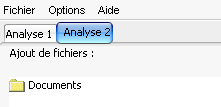

Onglets
Baldr se compose en fait de plusieurs fen�tres principales, identifi�es chacune par un onglet.

Vous pouvez ouvrir une dizaine d'onglets en parall�le, soit autant d'analyses r�alisables en parall�le.
Pour ouvrir ou fermer un onglet, il suffit d'utiliser les boutons situ�s en dessous de la liste des fichiers � analyser
( ou )
ou )